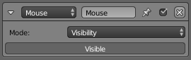
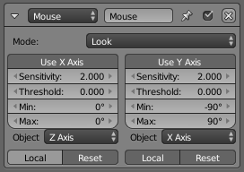

Актуатор «Миша» -- Mouse Actuator¶
Актуатор Mouse дозволяє два режими операції, для показу/схову курсора миші або для керування обертанням об'єкта за допомогою миші. Обертання мишею є достатньо гнучким, щоб дозволяти будь-який тип прогляду миші, а також віражування для контролерів польоту.
Властивості -- Properties¶
- Режим -- Mode
Визначає режим миші.
- Видимість -- Visibility
- Дозволяє показати/сховати курсор миші.
- Вигляд -- Look
- Керує обертанням об'єкта відповідно до переміщення миші по X та/або Y. До того ж, обертання об'єкта може обмежуватися за допомогою порогів та кутів закупорювання.
Видимість -- Visibility¶
Актуатор Mouse з режимом Visibility.

- Видимість -- Visibility
- Перемикає видимість курсора миші.
Вигляд -- Look¶
Серво керування є потужний спосіб досягнення руху шляхом, який імітує переміщення об'єктів у фізичному світі. Воно складається у серво контролері, що коригує силу на об'єкт, щоб досягти заданої швидкості.
Ghi chú
Щоб Mouse Look працював плавнішим чином, необхідно, щоб ширина та висота роздільності екрану у вікні рендера були задані рівномірно (наприклад, 1920x1080).

Актуатор Mouse: Вигляд -- Look.
- Вжити вісь X, вісь Y -- Use X axis, Y axis
- Визначає використання об'єкта, що володіє цим актуатором, як орієнтира для переміщення, наприклад, для рухомих платформ. Якщо це вимкнено, то як орієнтир буде використовуватися світ.
- Чутливість -- Sensitivity
- Цільова лінеарна скорість по кожній з трьох осей, яку об'єкт буде намагатися домогтися та досягатиме.
- Поріг -- Threshold
- Перемикає визначення координат як Глобальні (позначено сірим) або Локальні (позначено білим).
- Мін, мінімум -- Min
- Sets maximum and minimum limits for the force applied to the object. If disabled (i.e. X, Y or Z buttons are gray) the force applied is unlimited.
- Макс, максимум -- Max
- Задає Пропорційний Коефіцієнт. Це керує реакцією на різниці між фактичною та цільовою лінеарною скорістю.
- Object axis X, Y, Z
- Задає Інтегральний Коефіцієнт. Це керує реакцією відносно суми помилок при цьому русі.
- Локально -- Local
- Застосовує локально обертання навколо обраної осі об'єкта.
- Скидання -- Reset
- Скидає позицію X/Y курсора у центр екранного простору після розрахування.